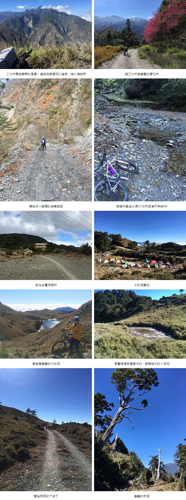

喜歡戶外喜歡山林，除了靠兩條腿爬上山外，登山車是另一種親近山林的方式，但台灣的林道，很多都損毀也未再繼續維護，或者有些封閉無法進入，所以登山車能騎乘的路段相對少也短，甚至路途中會有不少需要扛車的路段，對我而言，會少了些騎乘樂趣。在2020年底得知前往丹大林道已開闢溪底便道，可開車或騎車進入，也因山林陸續解禁，車輛可以直接開至二分所後再開始行程，來回近一百多公里的路程，高度落差兩千多，完全可以騎好騎滿，便利用了過年假期安排了三天的騎乘。
先介紹一下丹大林道與七彩湖：丹大林道舊稱「孫海林道」，是伐木業者孫海1957年所建，1989年，台電為了高壓輸電工程，才又開闢到海拔2980公尺的七彩湖。孫海橋在2004年敏督利颱風損毀，後來又建造了丹大吊橋。吊橋也因2008年辛樂克颱風的侵襲損毀，所以，原本汽車可直接通道七彩湖，從此要進入丹大林道，必須涉水而過，有時會有便橋，就可以不用再涉水。
七彩湖面積約2公頃、水深清澈時可達10公尺，是台灣面積第二大（僅次於翠峰湖）及第二深（僅次於大鬼湖）的高山湖泊，為布農族傳統領域及聖湖，早年並未命名，因著水鹿成群在湖畔飲水而稱為「鹿湖」或「鹿池」，直到1970年由登山界四大天王之首的林文安無意間看到日光照射在湖面上呈現七彩絢麗的光彩而命名「七彩湖」。旁邊有一個百岳六順山，高度是2999公尺。
目前前往七彩湖有三種方式：步行(通常安排三~五天)、無動力車輛(通常安排兩~四天)、坐車(兩天)。路程中有幾個似工寮處可以過夜處：六分所、孫海招待所、台電縣界保線所。但一般建議還是帶帳篷，避免前述過夜處人滿或是行程變更無法到達。步行是最傳統的方式，無動力車輛是去年底才開放的方式，較特別的是坐車，由於丹大林道上有幾個布農族的祖居地，信義鄉部落的人原本就可以用機車方式自由進出丹大林道，在林道開放後，組成了丹大機車連，可以直接載人上山。這次的行程安排：
D1 開車：台北 —孫海橋 — 二分所
騎車： 二分所 — 加年端部落 — 六分所前營地
D2 六分所 — 海天寺 —台電保線所
D3 台電保線所 — 七彩湖 — 海天寺— 六分所 — 二分所
林道水源以溪澗為主，帶個濾水器有遇到溪澗就取水會是比較好的方式，六分所有水塔引水，但人多時可能無水，台電保線所旁有活水可以取用，其他的每日路程中都有一兩處溪澗可以取水。林道沿路幾乎都是碎石泥土路，第一天的路程中不乏碎石崩落路段，這天也是爬升最多的一天，多數的路段都是用推車的。我是騎單避震的登山車，覺得已足夠應付這樣的路段，甚至看到有人是騎無避震的車輛，只能說佩服。
由於丹大上七彩湖至少是必須要住一晚的(是也有看到神人單攻，但覺得風險性太高自己體能也做不到)。就騎車來說，攜帶帳篷睡袋保暖衣物食物等，不建議背大背包，背上的重量在騎車時不是很舒服，裝備能打包在車上就打包上車。然後因為路上的顛簸，記得騎乘一陣就要檢查裝備與螺絲，不然下坡的時候很容易就會因為震動，搞到到處噴裝，甚至貨架鎖的不夠穩固有可能會在路途中脫落。
準備妥當，申請完該申請的文件，就可以享受這段行程囉，丹大林道雖然長，但風景非常優美，因為一路從低海拔到高海拔，可以看到不同的林相變化，騎登山車最開心的就是最後一天，足足有六小時多的下坡，刺激度非同凡響，大力推薦。
|  |